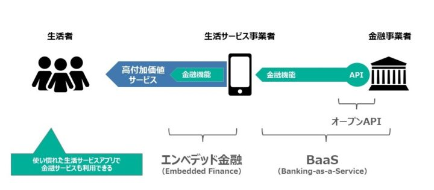
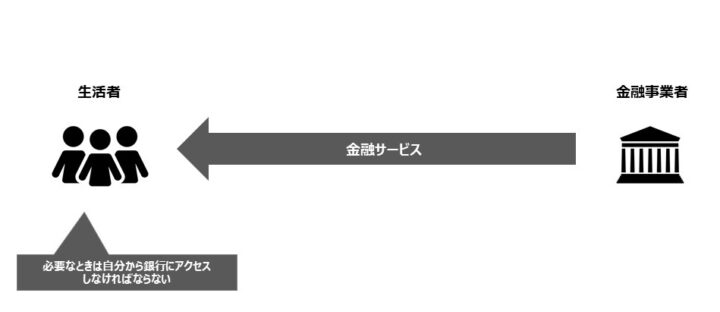
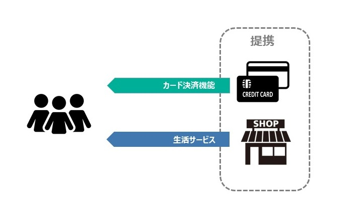
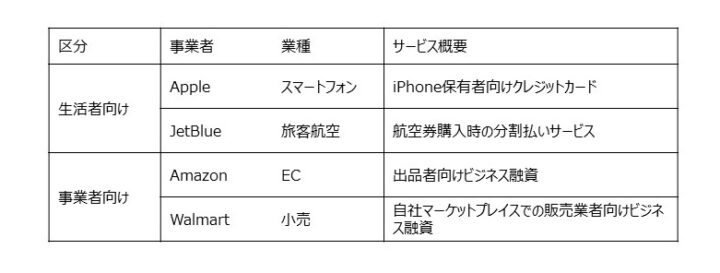
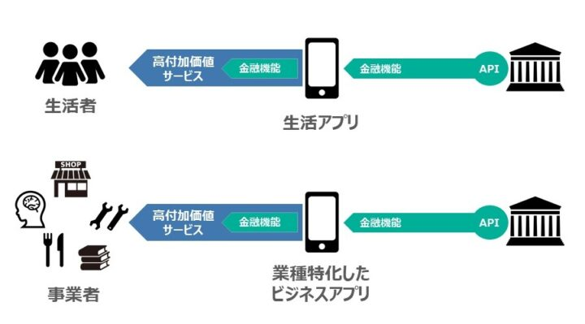
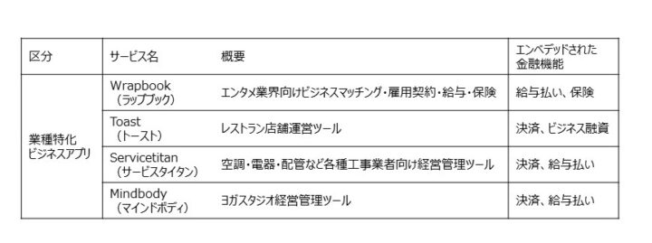

API活用型の金融サービス提供モデルであるバンキング・アズ・ア・サービス（BaaS）、そしてBaaSによって金融機能を組み込んだエンベデッド金融（Embedded Finance）の流れが加速している。
異業種を経由した金融サービスの間接提供を実現し、従来よりも広いユーザー層へのリーチを可能にするものだ。国内外の「BaaS+エンベデッド金融」の取り組みを紹介し、生活サービスとビジネスアプリの両分野における革新性について考察する。
この記事は『CardWave』334号(2021年3・4月号)に掲載された「「BaaS+ エンベデッド金融」の胎動 生活/ ビジネス両分野での革新力」の転載記事です。
BaaSとエンベデッド金融の流れ
2021年3月、日本経済新聞社と金融庁が主催するFinTechイベント「FIN/SUM（フィンサム）2021」が開催された。例年は秋開催だがコロナの影響を考慮して時期をずらし、リアルとバーチャルを併用した開催方式となっていた。その初日、話題になったのが日本銀行・黒田総裁のあいさつ。
「情報システムと金融システムの融合、アズ・ア・サービスの先にあるもの」と題したビデオメッセージにおいて黒田総裁が指摘したのは、「金融機関がこれまで一体提供していた金融サービスをアンバンドリングし、非金融企業の事業サービスに組み込めるようなかたちで提供する動き」、すなわちバンキング・アズ・ア・サービス（BaaS）とエンベデッド金融（Embedded Finance）の流れだった。
「BaaS」という名称は、ソフトウェアサービスにおけるSaaS（Software-as-a-Service）に倣ったもの。パッケージソフトウェアのような売り切りではなく、必要な機能を必要なときにサービスとして届けるのがSaaSだ。BaaSも同様に、必要な金融機能を必要なときにユーザーに届けるような、金融事業者のビジネスモデルのことを指す用語として数年前から徐々に広まってきた。
「Banking」は銀行サービスを意味するが、ビジネスモデルとしては銀行以外の金融事業者でも実現可能だ。本稿ではカード会社や前払式支払い手段発行業者、資金移動業者によるものもBaaSに含めて考える。
「エンベデッド金融」の方は用語としてはさらに新しく、海外のFinTech業界で使われるようになったのは2020年。「エンベッド（embed）」とは「組み込む」や「埋め込む」といった意味であり、その受動態が「エンベデッド」。異業種サービスのなかに組み込まれ一体的なユーザー体験（UX）として提供される金融サービスの形態を指している。「Embedded Finance」はしばしば「組込型金融」や「埋込型金融」とも訳されるが、本稿では直球で「エンベデッド金融」としたい。
さらに、2017年の銀行法改正で導入された銀行オープンAPIに対する位置付けも明確に理解しておく必要がある。「金融機関とフィンテック企業とのオープン・イノベーション（連携・協働による革新）を進めていくための制度的枠組み」（金融庁）として導入されたもので、都銀・地銀・第二地銀の多くで個人口座の参照と資金移動のためのAPIが整備済みとなっている。金融機関と異業種との連携を可能にするものという点で、BaaSやエンベデッド金融とかなり近しい印象を与える。それでは、オープンAPI、BaaS、そしてエンベデッド金融は相互にどのように位置付けて理解すべきものだろうか。

図１ オープンAPI、BaaS、エンベデッド金融の全体像
図１に、筆者なりの理解を図示する。まず、銀行など金融事業者のオープンAPIは当該金融事業者のシステム機能の一つであり、外部とのデータのやりとりのシステム上の窓口として機能するものだ。国内の多くの金融機関では、「制度対応のためAPI構築したはいいが、どう活用すれば事業貢献につながるのかイメージできない」というところも多い。
APIは新たなビジネスモデルを実現 する手段となりうるが、肝心の新ビジネスモデルがなければ宝の持ち腐れとなってしまう。そして、BaaSこそが「APIならでは」の新たな金融ビジネスモデルなのだ。
BaaSとは金融事業者によるサービス提供の新たな形態であって、APIを活用して金融機能を異業種である生活サービス事業者に提供するもの。生活サービス事業者はAPIで提供された金融機能を自社サービスに組み込む（エンベッドする）ことで、より付加価値の高いサービスをエンドユーザーたる生活者に提供することができる。このように、異業種サービスに金融機能が組み込まれた（エンベデッドされた）状態が「エンベデッド金融」なのである。
筆者は（1）オープンAPIはBaaSの実現手段、（2）BaaSはエンベデッド金融の実現手段（の一つ）、と理解している。オープンAPIは金融事業者が持つ技術要素であり、BaaSは金融事業者のビジネスモデルであるので、エンドユーザーたる生活者には見えないし、見える必要もない。
ユーザーから見えるのは、自分が利用している生活サービスがエンベデッド金融を用いた高付加価値サービスなのか、金融機能を持たない従来型サービスなのか、だけなのである。ユーザーはあくまで生活サービス事業者のサービスを利用しているだけで、生活サービス事業者が提供するUXの中で活動する。その裏でどの金融事業者がBaaSやオープンAPIを提供しているのか、意識する必要はない。
「直販モデル」と「間接モデル」
エンベデッド金融において、金融事業者は完全な裏方の役目を担うことになるが、だからといってビジネスモデルとして貧弱ということはない。むしろエンベデッド金融によって、従来の金融サービスの根本課題が解決可能になると考えられる。その根本課題とは、「従来の金融サービスは直販モデル」ということにある（図２）。

図２ 従来の金融サービスの「直販モデル」
従来の金融サービスでは、生活者たるユーザーは必要な時に自分から店舗やATMを訪れたりアプリにログインしたりというように、金融事業者が用意したチャネルにアクセスしなければならない。金融事業者のチャネルにおいて直接やりとりしなければならないという点で、「直販モデル」と筆者は呼んでいる。金融事業者の管理下でサービスを受けられるという点は安心だが、生活者の日常行動から自然にアクセスするような導線にはなりえない。日常的・継続的な接点となる要素にも極めて乏しい。たとえアプリ等のチャネルの使い勝手がどれほど素晴らしくても、銀行アプリに毎日アクセスする人はほとんどいない。
しかし、リテール金融はとにかく規模の確保が命。収益につながるトランザクションを獲得するには日常的に接点を維持して、生活や業務のなかで生じた金融ニーズを汲み取ることが重要だ。ユーザーの日常生活・日常業務への密着がキモとなるが、従来の「直販モデル」には限界がある。
このような課題を超えられるのが、BaaSによって実現するエンベデッド金融、すなわち「BaaS+エンベデッド金融」だ。金融事業者のところへユーザーに来てもらうのではなく、金融事業者のほうからユーザーへ歩み寄る。ユーザーが普段から利用している異業種サービスの中に金融サービスを組み込むことで、異業種を経由した間接的なサービス提供が実現できる。「BaaS+エンベ
デッド金融」で「間接モデル」を実現するのだ。
エンベデッド金融としての「Apple Card」
2019年、Apple社が同社初となるクレジットカード「Apple Card」の発行を開始した。チタン製のおしゃれなカードデザインが注目を集めたが、その実態はアプリを主体とするバーチャルカードだ。そしてアプリが提供するUXは、どこまでも「Apple流」が貫かれている。そのUXの斬新さは、本誌2020年1・2月号記事「『Apple Card』の真の価値はアプリにアリ」で紹介している。
ここで重要なのは、「Apple Card」は米国の大手銀行であるGoldman Sachsとの提携による「BaaS＋エンベデッド金融」であること。Apple自身はカード発行やカード決済に関する許認可やライセンスを自前で取得することなく、独自のUXの提供に注力。カードとそれに伴う口座業務の全てはGoldman Sachsが担い、必要なデータは全てAPI経由でリアルタイムに連携する、というフォーメーションでユーザーを魅了した。
「Apple Card」は大きな成功を収め、「米国クレジットカード史上最速の拡大を記録した」とまで言われている。実際、発行開始した翌月9月の末時点で取扱高100億ドルの残債7億3,600万ドル、2019年12月末時点で20億ドルという数値が公表されいる。ユーザーは「Appleならでは」のクレジットカードを手に入れ、AppleはiPhoneユーザーのさらなる囲い込みに成功。そしてGoldman Sachsは、Appleを介した「間接モデル」の力で、自力では成しえないほどの成果を収めることができたのだ。
しかし、国内の業界関係者には「Apple Card」がエンベデッド金融であるといってもピンとこないかもしれない。日本でもよくある提携カードモデルとの差異が見えにくいからだ。
日本の一般的な提携カードモデルと「BaaS＋エンベデッド金融」の違いは、「UXを掌握しているのが誰なのか」にある。
例えば日本のスーパーの提携カード。券面は確かにそのスーパーのデザインだが、カード明細はカード会社のサイトにログインして確認し、請求もカード会社から送られてくる。ユーザーから見ると、カード決済のUXはカード会社が提供しており、スーパーのUXはスーパーが提供しているように見える。カード決済機能がスーパーにエンベデッドされてはいない（図３）。

図３ 日本の提携カードモデルはエンベデッド金融ではない
「Apple Card」では、ユーザーが見るもの・触れるもの全てのUXがAppleのもので、カード明細や利用金額の支払いすらApple流の見せ方になっている。実際にカード口座を運営しているGoldman Sachsを意識することはほとんどない。そんなところに、エンベデッド金融である「Apple Card」と提携カードモデルの違いがある。
Goldmans SachsのBaaS事業。2020年にはAmazonやWalmart、そして格安航空会社のJetBlueが同社のBaaSを活用したエンベデッド金融サービスを開始している（表１）。

表１ Goldman SachsのBaaSを活用したエンベデッド金融事例
生活者向けサービスの文脈で語られることの多い「BaaS＋エンベデッド金融」だが、エンドユーザーを個人に限定する必要はなく、SME（中小事業者）など事業者を対象とすることに何ら問題はない。実際、表１のとおり、AmazonとWalmartはGoldman SachsのBaaSを活用して事業者向けの金融サービスを展開している。
特に、筆者が注目するのは業種特化したビジネスアプリにおけるエンベデッド金融の可能性だ（図４）。

図４ 生活アプリとビジネスアプリにおけるエンベデッド金融
業種特化型ビジネスアプリは、特定業種の事業者が抱く課題を解決しようとするもの。「かゆいところに手が届く」ようなビジネス機能を持つアプリは、一度その効果を実感するとユーザーは離れられなくなる。当該業種の中で一定のユーザー数を確保したビジネスアプリにおいては、エンベデッド金融を搭載することでアプリの付加価値のさらなる向上と新たな収益源の創出につながる可能性もある。
表２に、米国で成長している業種特化型ビジネスアプリのうち、金融機能を組み込むことで付加価値を高めている企業を幾つか挙げる。これらはエンベデッド金融の事例といえるが、その実現手法がBaaSとは限らないことには留意してほしい。

表２ ビジネスアプリにおけるエンベデッド金融事例（米国、BaaSとは限らない）
「Wrapbook」はエンタメ業界向けのビジネスアプリのスタートアップ企業。映画やＣＭなどのコンテンツ制作では、役者だけでなくメイクやヘアスタイルなど専門性を持った人材を短期間だけ雇用する。1年で30回も雇用者が変わるという従事者もいるという。契約管理や給与支払い、必要な保険への加入などで煩雑な作業が求められるが、ニッチな産業であるため長らくIT化されていなかった。そこを効率化するアプリとして2018年に創業したのがWrapbookで、ビジネスマッチング機能も支持されてリピート利用者が増大しているという。給与の支払いや保険の処理などエンベデッド金融機能がアプリの価値を高めている。
「Toast」はレストラン向けの店舗運営ツール。予約管理や座席管理などに加え、キャッシュレス決済も提供している。最近はToastユーザーであるレストランへのビジネス融資も開始した。Toastの利用を通して蓄積した日々の売上や季節変動といった経営データを元に与信を行うという、トランザクション融資の王道といえる。レストランに対してキャッシュレス決済を提供しているPSPという立場を活用し、融資の返済はカード債権との相殺という形をとる。レストランからの能動的な返済処理は不要で、カードでの売上がある日にその一部を自動で返済していくという利便性も受けているようだ。
「Servicetitan」は、空調・電器・配管などの工事会社向けビジネスアプリ。訪問スケジュールや備品の管理といった機能に加え、訪問工事先でのキャッシュレス決済や従業員への給与払いといった機能までカバーしている。ユーザー数はすでに10万社を超えているという。
「Mindbody」はヨガスタジオ向けビジネスアプリ。レッスンスケジュールやインストラクターのスケジュールの管理、エンドユーザー（レッスン受講者）へのCRM機能に加え、継続課金などの決済機能や給与支払い機能も備える。同社に出資している米ベンチャーキャピタルのアンドリーセン・ホロウィッツによると、Mindbodyは各ユーザー企業から月に約250ドルの売上があがるが、そのうちサービス月額利用料は150ドルで、残り100ドルは決済機能の手数料等だという。決済機能の提供が収益性を大きく向上させていることになる。
国内のエンベデッド金融動向
国内でも「BaaS＋エンベデッド金融」がすでに動き始めている。例えば、JALのマイレージ会員向けの銀行サービスである「JAL NEOBANK」。飛行機が好きなユーザーでも、実際に搭乗する機会は年に数回程度という人が多い。そんな日常生活においてもユーザーとの継続的な接点を維持するという目的で、日常利用可能な銀行サービスとして設計されている。UXはJALのものだが、口座サービスは住信SBIネット銀行がBaaSで提供するというフォーメーションだ。
新生銀行グループもBaaSに本格的に取り組んでおり、パートナー企業向けに金融サービスを組み合わせて利用できるBaaSプラットフォーム「BANKIT（バンキット）」を提供している。インターネットマーケティングのセレスはポイントサイト「モッピー」でのFinTechサービス提供に「BANKIT」を活用する予定だ。3PLATZは在日外国人向けの生活サービスの一環として決済・金融サービスを提供する。カルチュア・コンビニエンス・クラブの子会社CCCマーケティングも「BANKIT」導入を予定している（筆者の所属するインフキュリオン コンサルティングの親会社であるインフキュリオンは「BANKIT」のパートナー企業として「ウォレットステーション」を提供している）。
業種特化型アプリにおけるエンベデッド金融の事例も、すでに出てきている。注目したいのは、「建設現場で働くすべての人を支えるアプリ」との位置付けの「助太刀」だ。2017年のサービス提供から急速にユーザー数を伸ばしており、2020年12月時点で14万事業者を超えている。コアとなっているのは、建設現場と職人の間のビジネスマッチング機能、そしてそれを裏で支える報酬支払機能「助太刀あんしん払い」だ。
さらに受け取った報酬をチャージして利用できるVisaプリペイド「助太刀カード」もある。クレディセゾンが発行と運営を担う資金移動業型プリペイドだが、UXは助太刀によるものであり、従来型の提携カードというより、BaaSと位置付けるほうが適切だ。個人で活動する「一人親方」が300万人以上、その多くが労災保険未加入という業界の改善を目指し、2019年にはアプリで申込が完結する「助太刀労災」も開始している。「助太刀」自身、金融機能がアプリの価値を高めていることを明確に認識しており、「Fintech事業」を同社の柱の一つとして位置付けている。
建設業界特化のビジネスアプリにおける金融機能の組み込みは「助太刀」だけにとどまらない。本誌2019年3・4月号掲載の「ローカルワークス後払い」や「ローカルワークスペイメント」を提供しているローカルワークスも、建設業界におけるエンベデッド金融事例と呼べるだろう。
また、業種特化ではなく業種横断ではあるが、クラウドキャストの経費精算サービス「Staple（ステイプル）」では、インフキュリオンのVisaカード発行プラットフォーム「Xard（エクサード）」を活用して、法人プリペイド「Stapleカード」を発行している。こちらも、ビジネスアプリにおけるBaaS活用の国内事例と数えていいだろう。
オープンAPIそしてBaaSという実現手段を得て、まさに離陸しようとしているエンベデッド金融。生活サービス分野だけでなく、ビジネスアプリにおいてもその変革力を発揮していくことを期待したい。


{kind=link}
{kind=link}
{kind=link}
{kind=link}
{kind=link}
{kind=link}